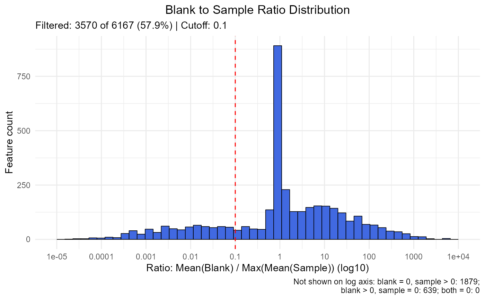

mc_plot_blank.RdVisualize the saved blank comparisons and filtering threshold.
mc_plot_blank(x, interactive = TRUE)A metabocensor_result returned by mc_prepare() or a filtering function.
TRUE returns an interactive Plotly figure. FALSE returns static ggplot output.
Use an object after blank filtering. Ratio mode plots positive finite ratios in logarithmic bins with the cutoff indicated; zero and undefined cases are summarized separately because they cannot appear on a logarithmic axis. Detection mode plots detected and not-detected counts. Values come from blank_tbl, including features removed at that stage.
A Plotly object when interactive = TRUE; otherwise a ggplot object.
peak_file <- system.file(
"extdata", "orbi_iimn_gnps_quant.csv",
package = "MetaboCensoR", mustWork = TRUE
)
imported <- mc_prepare(
peak_file, type = "mzmine",
sample_keywords = c(".mzML", "Peak area")
)
metadata_file <- system.file(
"extdata", "metadata.csv",
package = "MetaboCensoR", mustWork = TRUE
)
imported$labels <- mc_labels_from_metadata(
metadata_file, sample_names = imported$sample_cols,
sample_col = "Sample name", label_col = "Label"
)
after_blank <- mc_filter_blank(
imported, groups = "Blank", mode = "mean_cutoff", cutoff = 0.10
)
mc_plot_blank(after_blank, interactive = FALSE)

mc_plot_blank(after_blank, interactive = TRUE)